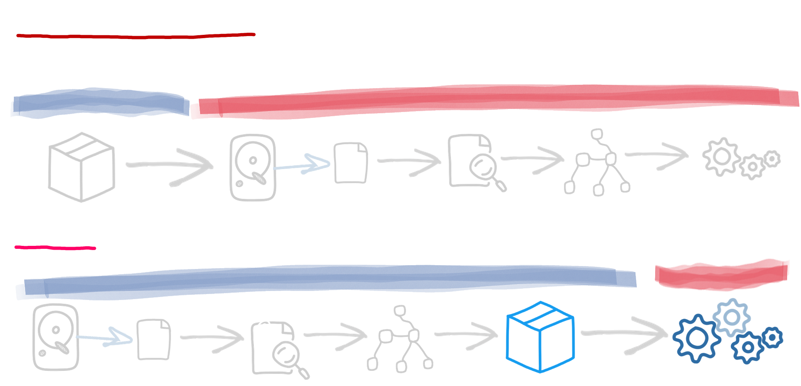
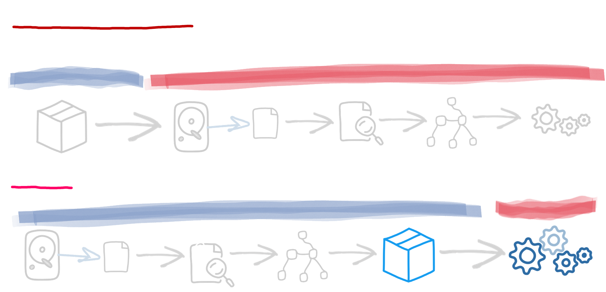

コンテナ・ファースト
Quarkusアプリケーションは、メモリ使用量が少なく、起動時間が短いように最適化されています。
Quarkusは、当初からコンテナファーストの理念に基づいて設計されています。具体的には、Quarkusのアプリケーションは、以下のようにメモリ使用量が少なく、起動時間が短くなるように最適化されています。
 

ビルド時処理
Quarkusの中心的なアイデアは、従来のフレームワークが実行時に行うことをビルド時に行うことです。設定の解析、クラスパスのスキャン、クラスロードに基づく機能の切り替えなどです。
可能な限り多くの処理がビルド時に行われるため、アプリケーションには実行時に使用されるクラスしか含まれません。従来のフレームワークでは、アプリケーションの初期展開を行うために必要なすべてのクラスは、一度しか使用されないにもかかわらず、アプリケーションの寿命が尽きるまで放置されます。Quarkusでは、これらのクラスは本番のJVMにもロードされません。Quarkusはそれで終わりません。ビルド時の処理では、アプリケーションで使用されるすべてのコンポーネントの初期化を準備します。すべてのメタデータの処理がすでに行われているため、メモリ使用量が少なくなり、起動時間が短縮されます。
リフレクション使用量の削減
Quarkusは、可能な限りリフレクションを回避し、起動時間とメモリ使用量を削減します。ビルド時の処理において、エクステンションはアプリケーションコードとクラスパス上で利用可能なクラスを分析し、リフレクションコールを通常の呼び出しに置き換えることができます。また、ビルド時にカスタムプロキシを生成することで、ダイナミックプロキシの使用を防ぐことができます。
Quarkusで使用されている依存性注入フレームワークであるArcは、すべてのリフレクションコールを排除し、ビルド時に注入グラフを推論します。そのため、アプリケーションの起動時には、高価なルックアップは必要ありません。
GraalVMネイティブイメージのファーストクラスのサポート
GraalVMネイティブ実行可能ファイルのサポートは、Quarkusの設計において当初から不可欠な要素でした。アプリケーションがネイティブ実行可能ファイルにコンパイルされると、標準的なJVMよりもはるかに高速に起動し、はるかに小さなヒープで実行できます。ネイティブコンパイラは、積極的にデッドコードを排除する技術を使用して、アプリケーションで絶対に必要なJVMやクラスの部分のみを埋め込みます。Quarkusでは、最適化されたネイティブ実行可能ファイルを簡単にビルドできます。ビルド時アプローチにより、Quarkusはアプリケーションに関する十分なメタデータを収集し、コンパイルを微調整することができます。-H:+ReportUnsupportedElementsAtRuntimeフラグやフォールバック、妥協はありません。
ネイティブイメージのプリブート
Quarkusアプリケーションのネイティブコンパイル時に、可能な限り多くのフレームワークをプリブートしています。これは、結果として得られるネイティブ実行可能ファイルが、スタートアップコードのほとんどをすでに実行し、その結果を実行可能ファイルにシリアライズしていることを意味しており、起動がさらに速くなります
Kubernetesだけでなく、ベアメタルも
メモリ使用量の削減や起動時間の短縮を可能にするすべての技術は、コンテナだけでなく、ベアメタルでもメリットがあります。ベアメタルであっても、メモリの使用量を減らすことができ、アプリケーションの実行を10秒も待つ必要がないのは、常に快適です。
Quarkusの設計時には、コンテナだけではなく、QuarkusアプリケーションをKubernetesなどのコンテナオーケストレーターにデプロイすることにも着目しました。Quarkusのビルド時の処理では、Kubernetesのメタデータも生成されるため、アプリケーションをKubernetesにデプロイする準備が整います。ヘルスチェックやメトリクスなどの実行時機能は、すぐに利用できます。Quarkusは、ビルド時に必要なメタデータをすべて収集し、Kubernetesのデプロイメント記述子を作成し、コンテナイメージを生成します。1つのコマンドラインで、アプリケーションをKubernetesクラスタにデプロイできます。